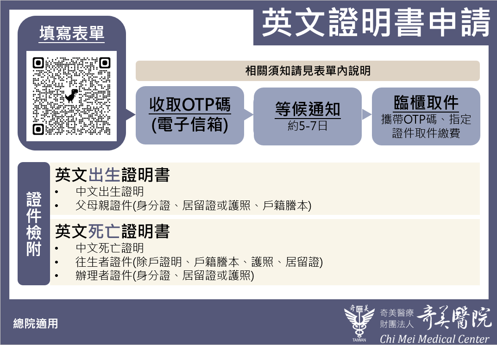
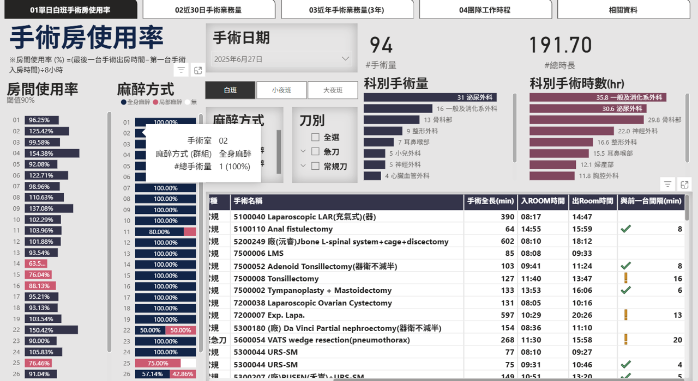
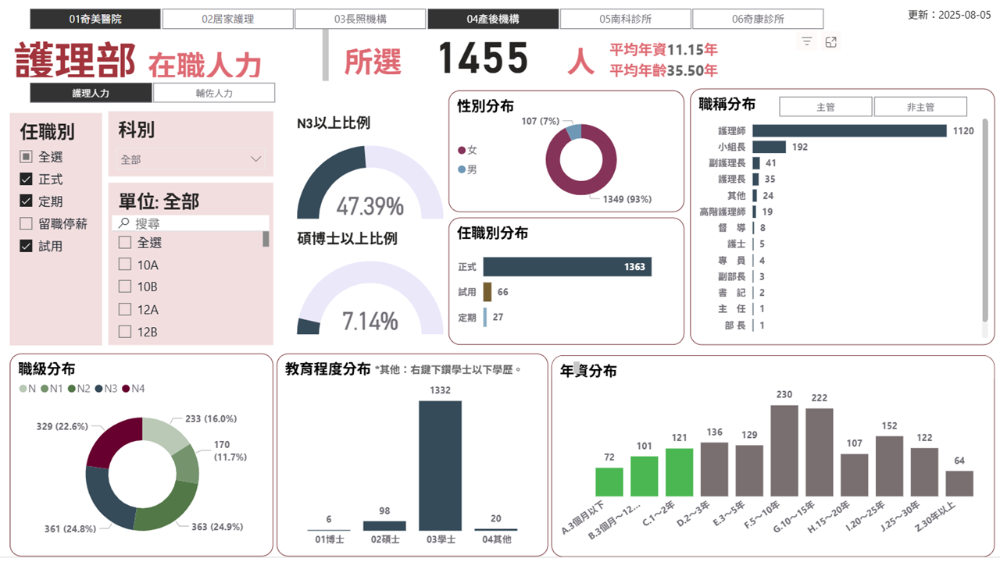
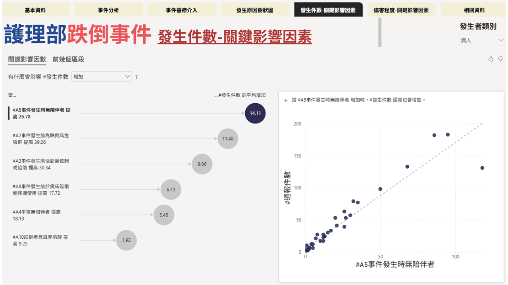
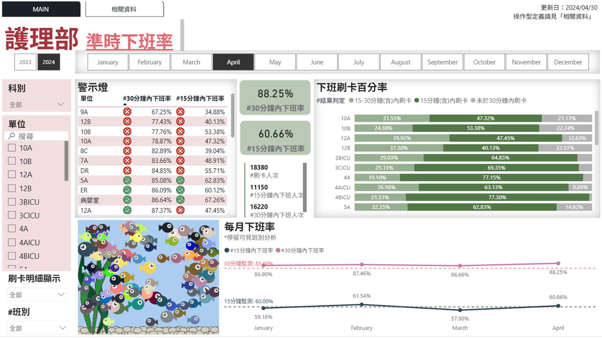

從醫療到核保的路上
黃聖凱
5年臨床照護｜新生兒・病嬰・成人心臟重症
8年醫療行政｜病歷判讀・診斷邏輯・醫療流程
希望職稱｜核保人員
電子信箱｜ekatsiming@gmail.com
黃聖凱
畢業於高雄醫學大學護理學系，具備12年臨床照護及醫療行政實務經驗，熟悉醫療流程、病歷資料及診斷文件判讀，個性負責任，與團隊協作配合度高。
過往工作中，我曾負責重大傷病案件與相關醫療文件審查，累積資料驗證、風險辨識及問題分析能力，並參與教育訓練管理、專案推動及流程改善工作，具備跨部門協調溝通與資訊整合經驗。
工作上我重視系統化思考與細節管理，善於透過數據分析及數位工具提升作業效率與品質，期望結合醫療專業背景、風險評估思維及分析能力，投入保險核保領域發展，協助進行風險評估、案件審查及核保決策，創造兼顧專業與效率的服務價值。
醫療文件與診斷資料判讀、資料異常辨識與邏輯核核、醫療流程理解與風險控管，重視合規性。
Office（樞紐分析、標準化格式、VBA）、Power BI（數據分析、指標建構），善用 GAS 與 Gemini/Claude/ChatGPT 等 AI 工具。
8年醫療行政資歷，覆核重大傷病申請案件、判讀診斷書與醫療文件、檢核醫療費用與出院結帳資料正確性，確保資料合規。
5年新生兒、病嬰、成人心臟重症臨床照護經驗，理解診斷、治療與預後邏輯，奠定風險評估基礎。
2016/07 - 2019/02｜2年8個月
2019/03 - 2026/06｜7年4個月
從護理臨床轉任醫療行政，負責醫學教育訓練、住院醫師甄選、醫務管理等業務，並持續運用數位工具改善行政流程。
核心經歷
數位賦能
醫務行政
高雄醫學大學 護理學系
大學畢業
奇美醫院 CiCARE 比賽
「拒絕大排長龍」
臺灣醫療品質協會
「疫情期間病房管理」
國際護理創意獎暨坎城未來獅培訓計畫
「消失的護理師」
國際護理創意獎暨坎城未來獅培訓計畫
「全方位導管偵測儀」
奇美醫院
8月份人氣關懷王
奇美醫院 Power BI 比賽
「護理部人力現況地圖」
奇美醫院 Power BI 比賽
「手術房間使用分析」


分析手術室使用率、麻醉方式、術式手術量與趨勢，作為管理者資源分配依據。

分析護理單位人力分布，串接跨系統資料，作為多項分析的母本資料與評鑑介紹工具。

分析跌倒族群、情境與措施，利用關鍵影響因素及原因樹狀圖，作為品質監測與改善依據。

以圖像化(小魚)呈現負向指標，兼顧主管需求與員工隱私，分析各單位準時下班率。